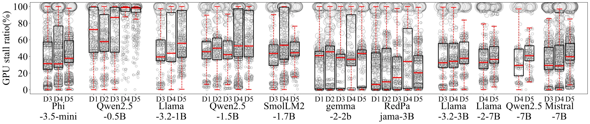
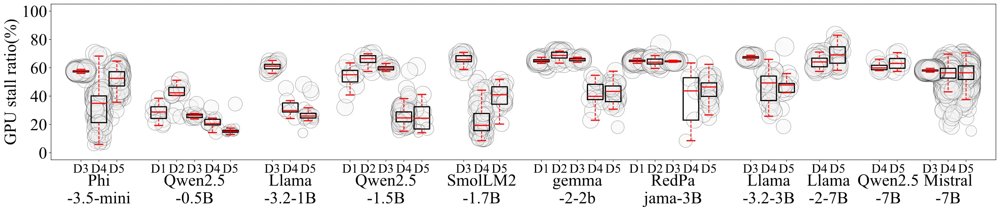

This webpage contains instructions to use our nnPerf+. nnPerf+ is a real-time on-device profiler designed to collect
and analyze the DNN model and LLM(large language model) runtime inference latency on mobile platforms. nnPerf+ demystifies the hidden layers
and metrics used for pursuing DNN and LLM optimizations and adaptations at the granularity of operators and kernels,
ensuring every facet contributing to a DNN model or LLM's runtime efficiency is easily accessible to mobile developers
via well-defined APIs.
With nnPerf+, the mobile developers can easily identify the bottleneck in model run-time efficiency and optimize
the model architecture to meet system-level objectives (SLO).
The figure below compares nnPerf+ to existing DNN model and LLM analyzers designed for mobile platforms.
[News] We will update the features for measuring the frequency, utilization, temperature, and PMU parameters (e.g, instructions, L2 cache miss) of multi-core processors later.
1. Plug-and-play design principles
• Follows a self-contained approach with no need for extra libraries or complex installations.
2. Real-time on-device profiling
• Monitor DNN inference delays directly on the device without external dependencies like adb.
3. Support measuring fine-grained information at the GPU kernel level
• Allows deep inspection of GPU kernels for detailed insights into DNN model optimization.
We are developing an online timeline visualization tool for nnPerf, we will release it later.
Example of visualization tool
Features of our visualization tools:
1. Easily upload test data files and resize the interface using the scroll wheel.
2. Utilize the "Sort" button to organize data within the file based on three distinctcategories.
3. Retrieve and query previously uploaded files conveniently through the History feature.
4. Selectively hide specific filters through the intuitive legend in the upper right corner of the interface.
Support for LLM
We also support profiling LLM, such as GPT, BERT.
latency (ns)
Inference Time (s)

Kernel-level GPU stall ratios

Token-level GPU stall ratios
(a) Kernel-level GPU stall ratios during a single token generation on five mobile devices with different computation capacities.
(b) Token-level GPU stall ratios across multiple tokens, grouped by five mobile devices.
Device 𝐷1 and 𝐷2 exclude model 𝑀5 due to their inadequate computation capacity.
𝐷1: OnePlus 8
𝐷2: Samsung Note10
𝐷3: OnePlus 9RT
𝐷4: OnePlus Ace Pro
𝐷5: Xiaomi 14Pro
𝑀1: Qwen2.5 0.5B
𝑀2: Qwen2.5 1.5B
𝑀3: Gemma2 2B
𝑀4: RedPajama 3B
𝑀5: Mistral 7B
Example of GPT-2
Example of MobileBERT
ARM GPU Performance Counters
EVENT_GROUP_UCHE - Unified L2 Cache Event Group
UCHE_VBIF_READ_BEATS_SP
Number of 128-bit data beats read from VBIF/External Memory to UCHE for SP
UCHE_READ_REQUESTS_SP
Total read requests issued from Shader Processor (SP) to UCHE
UCHE_WRITE_REQUESTS_SP
Total write requests issued from Shader Processor (SP) to UCHE
UCHE_VBIF_READ_BEATS_TP
Number of 128-bit data beats read from VBIF/External Memory to UCHE for TP
UCHE_READ_REQUESTS_TP
Total read requests issued from Texture Pipe (TP) to UCHE
EVENT_GROUP_SP - Shader Processor Event Group
SP_BUSY_CYCLES
Number of cycles where the Shader Processor is actively executing instructions
SP_NON_EXECUTION_CYCLES
Cycles where SP is active but not executing instructions
SP_FS_STAGE_FULL_ALU_INSTRUCTIONS
Number of full-precision ALU instructions executed in Fragment Shader stage
SP_VS_STAGE_FULL_ALU_INSTRUCTIONS
Number of full-precision ALU instructions executed in Vertex Shader stage
SP_CS_INSTRUCTIONS
Total number of Compute Shader instructions executed
SP_ICL1_MISSES
Level 1 Instruction Cache misses in the Shader Processor
SP_ICL1_REQUESTS
Total Level 1 Instruction Cache fetch requests
SP_LM_LOAD_INSTRUCTIONS
Number of Load instructions from Local Memory
SP_LM_STORE_INSTRUCTIONS
Number of Store instructions to Local Memory
SP_LM_ATOMICS
Number of Atomic operations performed on Local Memory
SP_GM_LOAD_INSTRUCTIONS
Number of Load instructions from Global Memory
SP_GM_STORE_INSTRUCTIONS
Number of Store instructions to Global Memory
SP_GM_ATOMICS
Number of Atomic operations performed on Global Memory
SP_STALL_CYCLES_VPC
Cycles where SP is stalled waiting for the Vertex Parameter Cache (VPC)
SP_STALL_CYCLES_TP
Cycles where SP is stalled waiting for the Texture Pipe (TP)
SP_STALL_CYCLES_UCHE
Cycles where SP is stalled waiting for the Unified L2 Cache (UCHE)
SP_STALL_CYCLES_RB
Cycles where SP is stalled waiting for the Render Backend (RB)
EVENT_GROUP_TP - Texture Pipe Event Group
TP_BUSY_CYCLES
Total cycles during which the Texture Pipe is performing processing tasks
TP_L1_CACHELINE_MISSES
Level 1 Texture Cache line misses
TP_L1_CACHELINE_REQUESTS
Total fetch requests issued to the Level 1 Texture Cache
TP_STALL_CYCLES_UCHE
Cycles where the Texture Pipe is stalled waiting for data from UCHE (L2)
TP_LATENCY_CYCLES
Accumulated cycles reflecting the latency of texture fetch operations
TP_STARVE_CYCLES_SP
Cycles where the TP is idle/starving due to lack of input from the Shader Processor
TP_STARVE_CYCLES_UCHE
Cycles where the TP is idle/starving waiting for memory responses from UCHE
TP_OUTPUT_PIXELS_POINT
Number of pixels produced using Point (Nearest) filtering
TP_OUTPUT_PIXELS_BILINEA
Number of pixels produced using Bilinear filtering
TP_OUTPUT_PIXELS_MIP
Number of pixels produced using Mipmapped filtering
TP_OUTPUT_PIXELS_ANISO
Number of pixels produced using Anisotropic filtering
TP_OUTPUT_PIXELS_ZERO_LOD
Number of pixels produced with Level of Detail (LOD) zero
EVENT_GROUP_CUSTOM - Custom Derived Metrics Group
GFLOPs
Giga Floating Point Operations per second (Total throughput)
GBPs
Giga Bytes per second (Memory bandwidth throughput)
GPUCycles
Total GPU internal clock cycles elapsed during the task
ShaderComputeCycles
Estimated cycles spent strictly on shader compute/ALU tasks
ShaderLoadStoreCycles
Estimated cycles spent on memory Load/Store operations
ShaderTextureCycles
Estimated cycles spent on texture mapping and sampling operations
AluUtil
ALU Utilization percentage (Active compute relative to available capacity)
LoadStoreUtil
Load/Store Unit utilization percentage
TextureUtil
Texture Pipe utilization percentage
FullAluRatio
Ratio of full-precision (32-bit) ALU instructions vs total ALU instructions
ShaderBusyRatio
Percentage of time the shader cores are actively executing
ShaderStalledRatio
Percentage of time shader cores are stalled waiting for resources
TexturePipesBusyRatio
Percentage of time the texture units are active
TextureL1MissRatio
Miss rate of the Level 1 Texture Cache
TextureL2ReadMissRatio
Miss rate of the L2 Cache (UCHE) specifically for texture read requests
L2ReadMissRatio
General L2 Cache (UCHE) read miss rate
InstructionCacheMissRatio
Overall Instruction Cache miss rate for the GPU cores
L1TextureMissPerPixel
Average number of L1 texture cache misses per processed pixel
Citation
If you find nnPerf useful in your research, please consider citing:
@inproceedings{nnPerf,
author = {Chu, Haolin and Zheng, Xiaolong and Liu, Liang and Ma, Huadong},
title = {nnPerf: Demystifying DNN Runtime Inference Latency on Mobile Platforms},
year = {2023},
publisher = {Association for Computing Machinery},
address = {New York, NY, USA},
url = {https://dl.acm.org/doi/10.1145/3625687.3625797},
doi = {10.1145/3625687.3625797},
booktitle = {Proceedings of the 21st ACM Conference on Embedded Networked Sensor Systems},
pages = {125–137},
}
Get Help
If you have any functional requirements or usage feedback for nnPerf, please send it to this email address: buptwins#163.com (replace # with @).